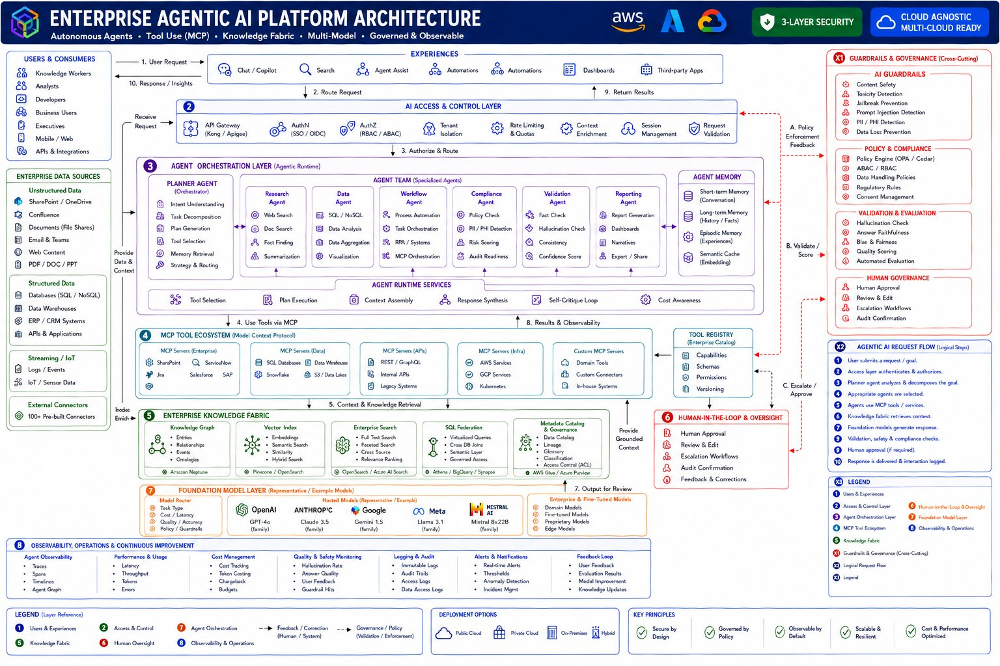
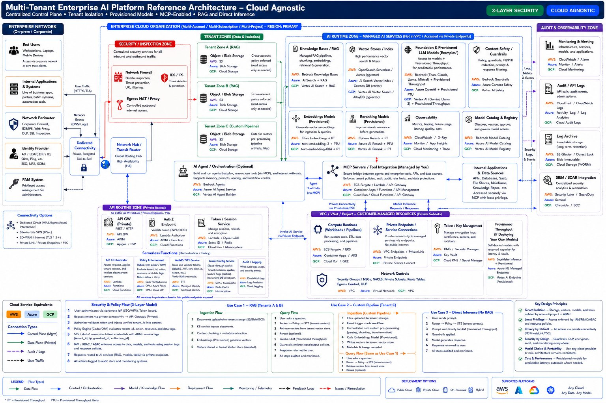
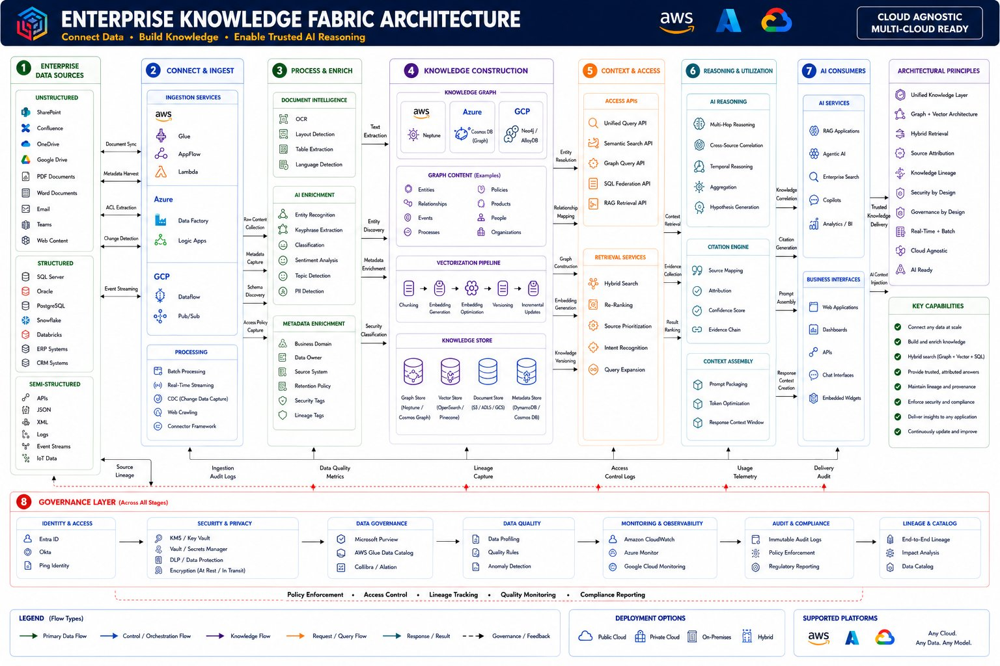
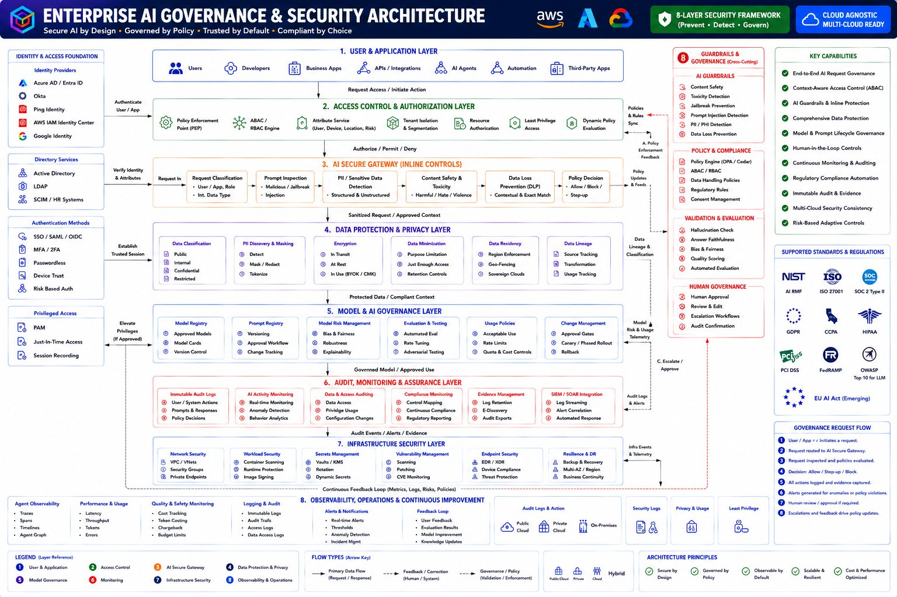
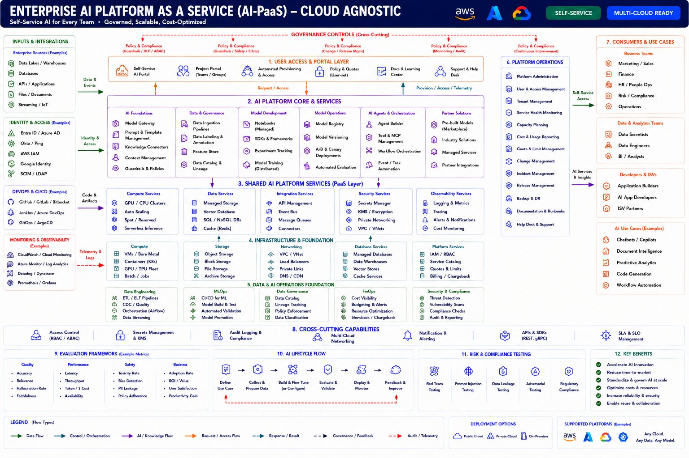
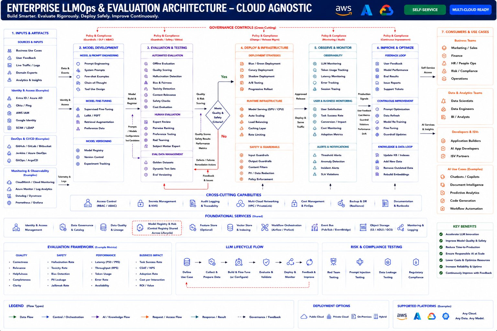
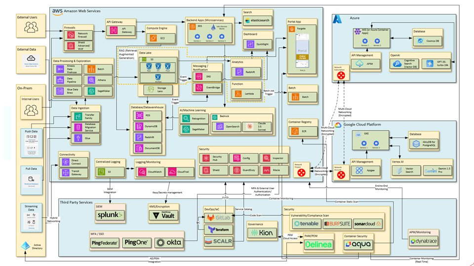

These diagrams are original, vendor-neutral reference designs — not the internal
architecture of any employer or client. Click any diagram to open it at full resolution.
1
Enterprise Agentic AI Platform Architecture
A planner-led agent team that uses enterprise tools via the Model Context Protocol (MCP),
grounded by a knowledge fabric, with multi-model routing, agent memory, human-in-the-loop oversight,
and cross-cutting guardrails, validation, and governance.

Open full size ↗
2
Multi-Tenant Enterprise AI Platform Reference Architecture
A centralized control plane with strict tenant isolation, provisioned models, MCP-enabled
tool integration, and both RAG and direct-inference paths — shown end-to-end with AWS, Azure, and
GCP service equivalents and a three-layer security model.

Open full size ↗
3
Enterprise Knowledge Fabric Architecture
Connects any source, applies document intelligence and enrichment, and builds a knowledge
graph plus vector and metadata stores for hybrid retrieval with reranking, citations, and lineage —
wrapped by a governance layer across every stage.

Open full size ↗
4
Enterprise AI Governance & Security Architecture
An eight-layer security and governance model (Prevent · Detect · Govern):
zero-trust identity and ABAC authorization, an inline AI secure gateway, data protection and privacy,
model governance, immutable audit, and SIEM/SOAR — mapped to NIST, ISO 27001, SOC 2, GDPR, HIPAA,
and the EU AI Act.

Open full size ↗
5
Enterprise AI Platform as a Service (AI-PaaS)
A self-service, multi-tenant AI platform: a portal and platform core over shared AI services,
infrastructure, and a data-and-AI operations foundation, with cross-cutting governance, FinOps cost
controls, and per-tenant isolation and chargeback.

Open full size ↗
6
Enterprise LLMOps & Evaluation Architecture
The full LLM lifecycle — model development and fine-tuning, a rigorous evaluation and
red-teaming harness with quality and safety gates, safe deployment strategies, observability and drift
monitoring, and a continuous feedback-and-improvement loop.

Open full size ↗
7
Multi-Cloud Enablement Reference Architecture
A concrete multi-cloud deployment: an AWS-centric data, RAG, and ML stack interconnected
with Azure and GCP over encrypted multi-cloud networking, integrated with third-party identity, secrets,
CI/CD, security-scanning, and observability tooling.
Open full size ↗
8
IT Modernization & Cloud Enablement — AWS Reference Architecture
An IT modernization and cloud-enablement blueprint: enterprise workloads modernized on an AWS
core — data ingestion and processing, a RAG-enabled data lake, databases and warehousing, analytics,
and AI/ML — with layered security and observability, extended to Azure and GCP over encrypted
multi-cloud networking, and integrated with third-party DevOps/IaC, identity, secrets, security-scanning,
and monitoring tooling.

Open full size ↗